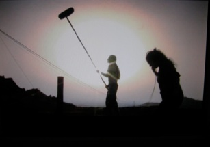
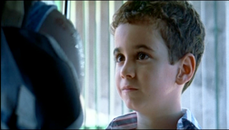
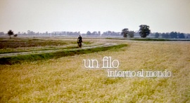
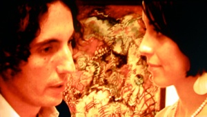
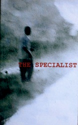

Lama Film




The unmaking of
production: Lama Film
script and direct by: Andrea D’Ambrosio
with : Franco Arminio
original music: Paranza Vibes
music edition: Warner Chappell Music
genre: documentary
length: 59'
year 2010

production: Kinos Klan, (Spain)
minority co-production: Lama Film (Italy)
direct by: Juan Manuel Chumilla Carbajosa
with: Patricia Hurt, Cesare Apolito, Stefan Nicoll
guest star
Kit Carson
Jines Garcia Millan
Rafael Alvarez "El Brujo"
genre: docu- fiction
year 2009/10
script and direct by: Giuseppe K Miglietta
with: Davide Poggioli & Sonia Paulo Mavunj
genre: short film
length: 10’
year: 2007
production: A.GI.DI srl - Set in Spa
executive production: Lama Film srl
script and direct by : Sophie Chiarello
with: Aldo, Giovanni e Giacomo
fotografy: Vittorio Omodei Zorini
editing: Antonio di Peppo
production designer: Daniela Gardinelli
costum design: Loredana Buscemi
muisic: Sebastiano Cognolato
genre: short film
length: 15’
year: 2006




The Specialist
Un filo intorno al mondo
production: (h)
executive production: Lama Film
script and direct by : Gianluca Maria Tavarelli
with: Valerio Aprea, Susy Laude
fotografy: Andrea Locatelli
editing: Alessandro Heffler
production designer: Valentina Scalia
genre: short film
length: 5’
year: 2005
La mia ossessione
production :Taodue film
executive production: Lama Film
direct by : Gianluca Maria Tavarelli
with (alphabetic order):
Giuseppe Battiston, Valerio Binasco, Michela Cescon, Paola Cortellesi, Donatella Finocchiaro, Alessandro Gassman, Francesca Inaudi, Valeria Milillo, Rocco Papaleo, Micaela Ramazzotti, Andrea Renzi, Giorgio Tirabassi, Luca Zingaretti
genre: drama
length: 96’
year:2006